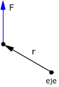

Momento de una fuerza respecto a un eje
|
 |
|
||||||
El módulo del momento vale MF = r ·F· sen φ siendo φ el ángulo que forman r y F
La dirección del momento es la del eje y su sentido es el de avance
de un sacacorchos que gire
de r a F por el camino más corto
En lugar de dar el signo para especificar el sentido del momento se puede
dar el sentido de giro del sacacorchos
Sentido igual al de las agujas del reloj (-) |
|
Sentido contrario al de las agujas del reloj (+) |